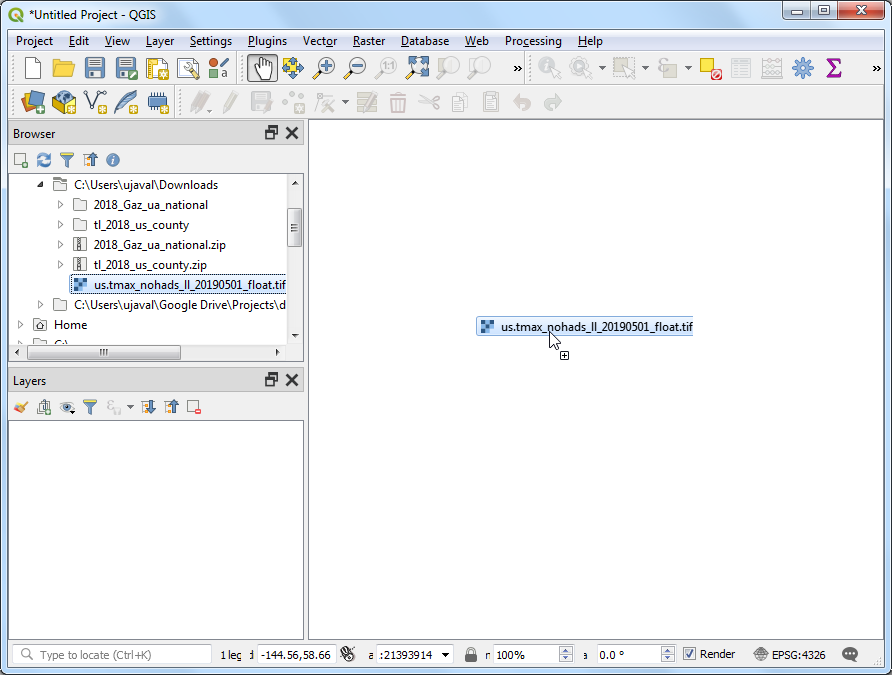
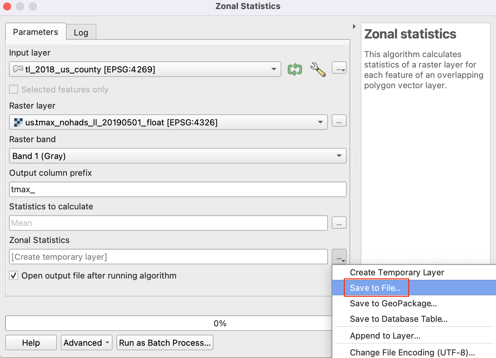

Muestrear Datos Ráster usando Puntos o Polígonos (QGIS3)¶
Varios conjuntos de datos científicos y ambientales vienen como rásters grid. Los datos de elevación (DEM) son también distribuídos como archivos rásters. En estos archivos rásters, el parámetro que está siendo representado está codificado como los valores píxeles del ráster. A menudo, uno necesita extraer los valores píxeles en ciertas ubicaciones o agregarlos sobre un área. Esta funcionalidad está disponible en QGIS mediante algoritmos de procesamiento. Muestrear valores de ráster para capas punto y Estadísticas Zonales para capas polígono.
Vista general de la tarea¶
Dada una cuadrícula ráster de temperatura máxima en los EE.UU. continental, necesitamos extraer la temperatura en una capa punto de todas las áreas urbanas y calcular la temperatura promedio para una capa polígono de cada condado en los EE.UU.
Otras habilidades que aprenderá¶
Seleccionar y quitar múltiples capas de la Tabla de Contenido QGIS.
Obtener los datos¶
El Centro de Predicción del Clima de NOAA provee datos SIG relacionados con temperatura y precipitación en los EE.UU. Descargue el último archivo grid para temperaturas máximas. El archivo tendrá como nombre us.tmax_nohads_ll_{YYYYMMDD}_float.tif
Usaremos un archivo CSV del 2018 US Gazetteer que representa las áreas urbanas en los EE.UU. Descargue el Archivo Urban Areas Gazetteer.
US Census Bureau provides TIGER/Line Shapefiles. You can visit the FTP site and download Census Tracts Shapefile.
Para su comodidad, puede descargar directamente una copia de los conjuntos de datos de los enlaces abajo:
us.tmax_nohads_ll_20190501_float.tif
Fuentes de Datos: [NOAACPC], [USGAZETTEER] [TIGER]
Procedimiento¶
Descomprima y extraiga tanto
2018_Gaz_ua_national.zipcomotl_2018_us_county.zipa una carpeta en su computadora. Abra QGIS y localice el archivous.tmax_nohads_ll_20190501_float.tif. En el Explorador QGIS, arrástrelo a la pantalla.

Verá una nueva capa ráster
us.tmax_nohads_ll_20190501_floatcargada en el panel Capas. Esta capa ráster contiene la temperatura máxima registrada en cada píxel en grados Celsius. A continuación cargaremos el archivo punto de áreas urbanas. Este archivo viene como un archivo texto en el formato Valores Separados por Tabulación (TSV). Clic el botón Abrir Administrador de Fuente de Datos en la Barra de Herramientas Fuente de Datos.

Cambie a la pestaña Texto Delimitado. Clic el botón … junto a Nombre de archivo y especifique la ruta al archivo texto que descargó. En la sección Formato de archivo, seleccione Delimitadores personalizados y marque Tabulación. Seleccione
INTPTLONGcomo el campo X yINTPTLATcomo el campo Y. Clic en Añadir y luego Cerrar.

Una nueva capa punto
2018_Gaz_ua_nationalse cargará en el panel Capas. Ahora estamos listos para extraer los valores de la capa ráster en esos puntos. Vaya a .

Busque y localice el algoritmo menuselection:Análisis ráster –> Muestrear valores ráster. Haga doble-clic para iniciarlo.

Seleccione
2018_Gaz_ua_nationalcomo la Capa de Punto de Entrada. Seleccioneus.tmax_nohads_ll_20190501_floatcomo la Capa Ráster a Muestrear. Expanda los Parámetros avanzados e ingresetmaxcomo el Prefijo de columna de salida. Clic en Ejecutar. Una vez que termine el procesamiento, clic en Cerrar.

Una nueva capa
Sampled Pointsserá cargada en el panel Capas. Seleccione la herramienta Identificar en la Barra de herramientas Atributos y haga clic en cualquier punto. Verá los atributos mostrados en el panel Resultados de identificación. Verá un nuevo atributo llamado tmax_1 agregado a cada objeto. Éste es el valor píxel de la capa ráster extraído en la ubicación del punto. El 1 representa el número de banda del ráster. Si la capa ráster tenía múltiples bandas, vería múltiples columnas nuevas en la capa de salida.

La primera parte de nuestro análisis está completo. Quitemos las capas innecesarias. Mantenga presionada la tecla Mayús y seleccione las capas
Sampled Points` y ``2018_Gaz_ua_national. Clic-derecho y seleccion Borrar para eliminarlas de QGIS. Cuando se le pregunta Eliminar 2 entradas de leyenda?, seleccione Aceptar.

Ahora usaremos la capa de condados para muestrear el ráster y calcular la temperatura promedio para cada condado. Localice el archivo
tl_2018_us_county.shpen el Explorador QGIS y arrástrelo a la pantalla.

Se cargará una nueva capa
tl_2018_us_countyal panel Capas. Vaya a .

Busque y localice el algoritmo y haga doble-clic para iniciarlo.

Seleccione
us.tmax_nohads_ll_20190501_floatcomo la Capa ráster ytl_2018_us_countycomo la Capa vectorial que contiene zonas. Ingresetmax_como el Prefijo de columna salida. Clic en … junto a Estadísticas a calcular.

Seleccione sólo el valor
Meany clic en Aceptar.

Now, click on the … next to Zonal Statistics and select Save to File option to save the output.
Browse to the folder where you want to save the output. Save the output layer as
us_county_tmax.shp. Click Run to start the processing. The algorithm may take a few minutes to complete and you will see the output layer added as soon as the processing finishes. Click Close.

Right-click the
us_county_tmaxlayer, and select Open Attribute Table.

You will see a new column called
tmax_meanadded in the attribute table. This contains the average temperature value extracted over the polygon for each feature. There are some null values because those counties (belonging to Alaska, Hawaii and Puerto Rico) are outside of the raster layer’s extent.

If you want to give feedback or share your experience with this tutorial, please comment below. (requires GitHub account)